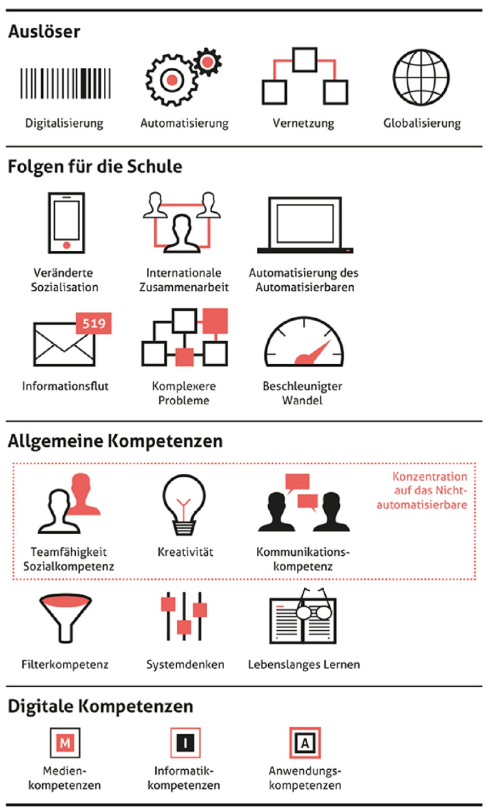
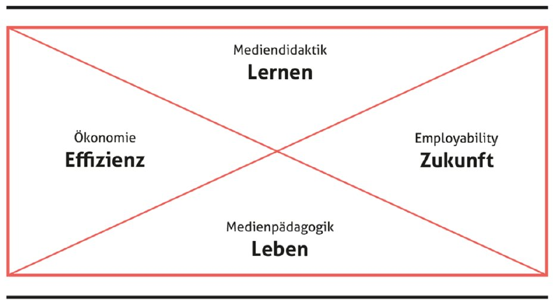
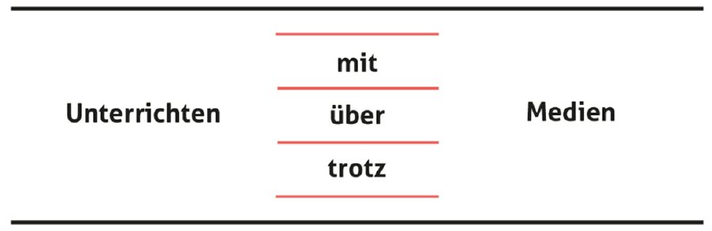
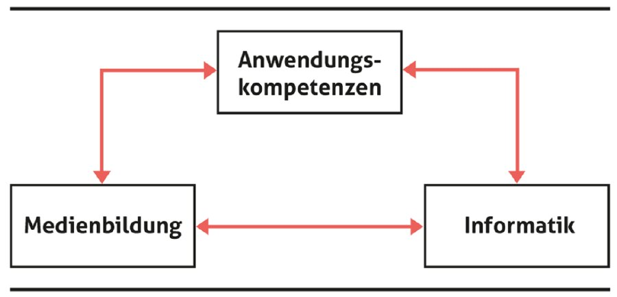
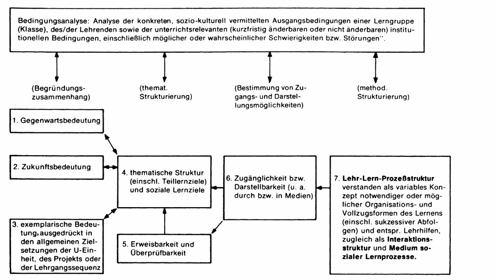
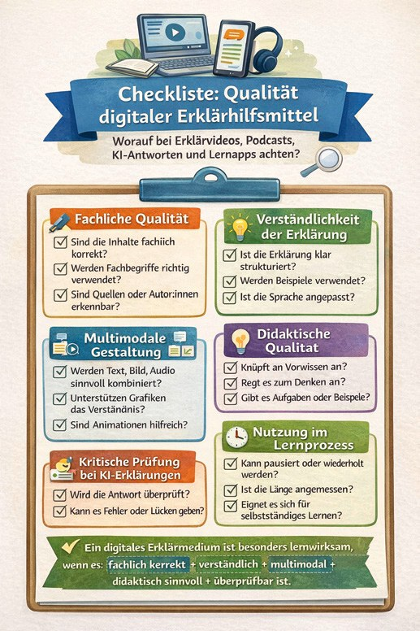
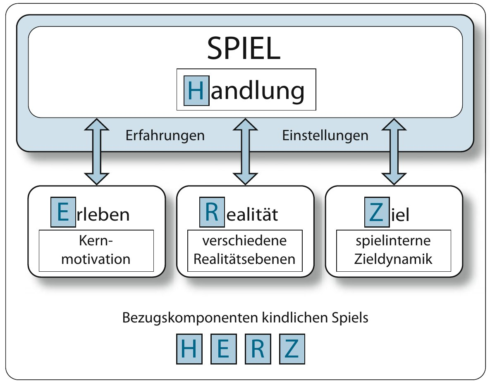

Was bedeutet Lernen in einer Kultur der Digitalität? Theorien, Konzepte, Spannungsfelder und Handlungsmöglichkeiten für die Praxis.
Worum es geht
Das Leitmedium wechselt vom gedruckten Buch zu digitalen Netzwerken. Informationen sind im Überfluss vorhanden, Algorithmen sortieren vor, und KI übernimmt Aufgaben, die früher als Lernziele galten. Lernen heisst darum immer weniger, Wissen aufzunehmen, und immer mehr, verantwortungsvoll mit vielen Handlungsmöglichkeiten umzugehen.
Diese Seite klärt zuerst, was Digitalität ist und welche Kompetenzen wichtiger werden. Dann fragt sie, warum und wie digitale Medien in die Schule gehören, mit Blick auf Identität, Medienkritik und Ethik, und zeigt, wie Lernangebote unter diesen Bedingungen geplant, erklärt, geprüft und gestaltet werden. Du kannst sie von oben nach unten durcharbeiten oder über das Inhaltsverzeichnis springen.
«Handys weg, das steht alles im Buch.» «Das kannst du doch schnell googeln.» «Die KI macht dir das in zwei Sekunden.»
Alle drei Sätze sagen etwas darüber, woher Wissen kommt und was Lernen bedeutet. Im ersten ist das Buch die Quelle, im zweiten das Netz, im dritten eine Maschine, die gleich die ganze Arbeit übernimmt. Diese Seite fragt: Wie gestalte ich Lernen, wenn digitale Netzwerke unsere Kultur prägen, und welche Haltung nehme ich dazu ein?
Gedankengang · drei Fragen an jede Lerneinheit
1
Was verändert sich? Welche Ziele werden wichtiger, wenn Informationen jederzeit verfügbar sind und Maschinen vieles automatisieren? → Kompetenzen
2
Mit, über oder trotz? Nutzen wir Medien als Werkzeug, machen wir sie zum Thema, oder müssen wir trotz ihrer Ablenkung lernen? → mit, über, trotz
3
Wofür genau? Passt das Tool zum Lernziel, oder passen wir das Lernen dem Tool an? → Tools evaluieren
Kompetenz L.07 · Lernen und Digitalität verbinden
Ausgangslage: Das Leitmedium wechselt vom gedruckten Buch zu digitalen Netzwerken. In einer Netzwerkgesellschaft mit riesigen digitalen Ressourcen folgt Lernen neuen Mustern. Im Zentrum steht weniger das Vermitteln und Aneignen von Wissen als der verantwortungsvolle Umgang mit vielen Handlungsmöglichkeiten.
Tätigkeiten (Sek I und Maturitätsschulen)
digitale Infrastruktur der Schule adäquat nutzen, Geräte sicher bedienen →
digitale Identität und Medien kritisch reflektieren →
Tools und Technologien kriterienbasiert evaluieren →
Lernangebote unter den Bedingungen der Digitalität konzipieren →
die eigene Haltung zur Kultur der Digitalität reflektieren →
digitale Medien für Information und Kommunikation nutzen →
Bezug Rahmenlehrplan Maturitätsschulen: Kommunikationsprozesse in sozialen Netzwerken im Zusammenhang mit schulischen Sozialkompetenztrainings analysieren.
TheorieGedankengangSpannungsfeldPraxis
So liest du diese Seite
A klärt, was Digitalität ist und welche Kompetenzen dadurch wichtiger werden. B fragt, warum und wie digitale Medien in die Schule gehören, mit Blick auf Identität, Medienkritik und Ethik. C zeigt, wie ich Lernangebote plane, erkläre, Tools prüfe und Projekte und Spiel einbeziehe. D bietet Werkzeuge, E die Spannungsfelder. Verwandte Themen: Lernprozesse begleiten und Lerngespräche führen (Feedback, auch mit KI).
Alle Aussagen stützen sich auf die im Literaturverzeichnis genannten Quellen und sind in eigenen Worten zusammengefasst. Hinweise mit «eigene Synthese» verbinden mehrere Quellen. Abbildungen mit dem Vermerk Bildzitat sind aus den Quellen übernommen und mit Fundstelle zitiert. Alle übrigen Grafiken sind eigene Darstellungen, die ich mit Hilfe von Claude.ai erstellt habe, teils in Anlehnung an die genannten Quellen. Fallbeispiele ohne Quellenangabe sind erfunden.
Überblick
Wie die Konzepte zusammenhängen
Im Zentrum steht das Lernen in einer Kultur der Digitalität. Oben stehen die Formen, die diese Kultur prägen, links die Grundlagen (was sich verändert), rechts die Gestaltung von Lernangeboten und unten die Haltung, die alles trägt. Klicke auf einen Begriff, um direkt dorthin zu springen.
Eigene Darstellung.
AWas ist Digitalität?Begriffe, Leitmedienwechsel und die Kompetenzen, die dadurch wichtiger werden
A · Begriff
Digitalisierung und Digitalität
Digitalisierung meint den laufenden technischen Wandel: Abläufe, Texte, Bilder und Geräte werden in digitale Form gebracht und vernetzt. Digitalität beschreibt dagegen den Zustand, der daraus entstanden ist: eine Kultur, in der digitale Netzwerke unser Denken, Kommunizieren und Handeln mitprägen, auch dort, wo gerade kein Bildschirm im Spiel ist.
Stalder: Digitalität als Set von Beziehungen
Für den Kulturwissenschaftler Felix Stalder sind Medien Technologien der Beziehung: Sie erleichtern bestimmte Verbindungen zwischen Menschen und zu Dingen. Digitalität bezeichnet die Gesamtheit dieser Verbindungen, die heute auf der Infrastruktur digitaler Netzwerke beruhen, beim Herstellen und Nutzen von Gütern ebenso wie beim persönlichen und gemeinsamen Handeln. Es geht ihm ausdrücklich nicht um eine Gegenüberstellung von «digital» und «analog»: Das Analoge verschwindet nicht, es wird neu bewertet, teils sogar aufgewertet. Und auch das scheinbar Immaterielle beruht auf sehr materiellen Infrastrukturen, von Minen bis zu Satelliten.Stalder, 2016, Einleitung
Mecklenburg: Digitalität als Handlungsform
Lars Mecklenburg schlägt eine bewusst beschreibende Definition vor: Digitalität ist eine Form kommunikativen Handelns, nicht ein Gerät, eine App oder ein Medium. Sie integriert mündliche, schriftliche und mediale Ausdrucksformen und erweitert sie um neue Möglichkeiten. Eine ältere Form wird nur dort überflüssig, wo die neue dasselbe Bedürfnis besser erfüllt. Ob diese Kultur gut oder schlecht ist, lässt er bewusst offen.Mecklenburg, 2020
Eigene Darstellung nach Mecklenburg (2020), Abbildungen «Kommunikatives Handlungsfeld» 1–3 (Original unter CC BY-SA). Das Handlungsfeld wird erweitert, nicht ersetzt.
Gedankengang
Beide Definitionen teilen eine wichtige Einsicht: Digitalität ist keine Werkzeugfrage. Wer nur fragt, welches Gerät oder welche App im Unterricht eingesetzt wird, übersieht, dass sich die Kultur verändert hat, in der Lernende leben und lernen. Die Frage für die Schule lautet deshalb nicht «digital oder analog?», sondern: Was bedeutet Lernen, wenn sich die Formen des Kommunizierens und des Wissens verändern? (eigene Synthese)
A · Leitmedienwechsel
Vom Buch zum vernetzten Computer
Schon in den 1960er-Jahren beschrieb Marshall McLuhan die Neuzeit als Gutenberg-Galaxis, eine Kultur, die vom gedruckten Buch geprägt ist. Stalder stellt fest, dass sich seit etwa dem Jahr 2000 viele einzelne Entwicklungen zu einer neuen kulturellen Konstellation verbunden haben, in der die Institutionen der Buchkultur unter Druck geraten (Stalder, 2016).
Was der Leitmedienwechsel auslöst
Beat Döbeli Honegger nennt Folgen, die die Schule direkt betreffen:
eine veränderte Sozialisation der Kinder und Jugendlichen
eine veränderte Arbeitswelt, in der Routinearbeit automatisiert wird
der Verlust des Informationsmonopols: Lehrperson und Lehrmittel sind nicht mehr die einzigen Quellen
neue Werkzeuge für Zusammenarbeit, Bild, Ton und Video
neue Themen, die nötig sind, um die heutige Welt zu verstehen
Döbeli Honegger, 2016, Kap. 3
Eigene Darstellung nach Döbeli Honegger (2016), Abb. 3.4, S. 43. Döbeli betont, dass die Parallele stark vereinfacht ist.
Krommer: Medien prägen, was Lernen heisst
Der Didaktiker Axel Krommer kritisiert den beliebten Grundsatz «Pädagogik vor Technik». Er prüft drei Lesarten: Als Mahnung, dass Technik dem Menschen dienen soll, ist der Satz richtig, aber trivial, weil niemand das Gegenteil vertritt. Versteht mensch unter Technik nur elektronische Geräte, wird übersehen, dass auch Schrift und Buch Technologien sind, die wir nur nicht mehr als solche wahrnehmen. Und wer meint, Ziele liessen sich unabhängig von Medien festlegen, übersieht, dass mit Buch und Heft andere Ziele erreichbar sind als mit vernetzten Geräten. Der eigentliche Gewinn digitaler Medien liegt für Krommer deshalb nicht darin, alte Ziele schneller zu erreichen, sondern darin, neue Zieldimensionen zu eröffnen.Krommer, 2018 (wiederveröffentlicht im Goethe-Institut-Magazin Sprache)
Verknüpfung
Krommer stützt sich wie Döbeli auf Stalder. Gemeinsam ist allen drei: Ein Leitmedium ist mehr als ein Werkzeug. Es prägt, was in einer Gesellschaft als Wissen gilt und wie gelernt wird. Darum reicht es nicht, das Arbeitsblatt durch ein PDF zu ersetzen (eigene Synthese).
A · Kultur der Digitalität
Drei Formen, die die Kultur der Digitalität prägen
Stalder beschreibt drei Formen, die sich quer durch viele Lebensbereiche zeigen. Sie erklären, warum Lernen in einer Netzwerkgesellschaft anders funktioniert. Die Hinweise «In der Schule» sind eine eigene Übertragung.
Referentialität
Menschen nutzen bestehendes kulturelles Material für eigene Werke: zitieren, remixen, kommentieren, teilen. Weil es unüberschaubar viele Bezugspunkte gibt, werden Auswählen und Neu-Zusammenführen zu grundlegenden Handlungen, mit denen Bedeutung und Identität entstehen.
In der Schule: Quellen finden, auswählen, kombinieren und offenlegen wird zur Kernaufgabe, nicht zum Nebenschauplatz.
Gemeinschaftlichkeit
Bedeutung wird in gemeinsamen Bezugsrahmen stabilisiert, etwa in Communities, Netzwerken und Gruppen. Diese Gemeinschaften eröffnen Ressourcen und Handlungsmöglichkeiten, üben aber auch Netzwerkmacht aus, in der sich Freiwilligkeit und Zwang mischen.
In der Schule: Zusammenarbeit, Peer-Feedback und die Analyse von Gruppendynamiken in sozialen Netzwerken.
Algorithmizität
Automatisierte Entscheidungsverfahren filtern und ordnen die riesigen Datenmengen, damit Menschen sie überhaupt wahrnehmen können. Ohne Algorithmen wären wir in der Datenflut blind, mit ihnen entstehen neue Abhängigkeiten.
In der Schule: verstehen, wie Suchmaschinen, Feeds und KI vorsortieren, und deren Auswahl hinterfragen.
Stalder, 2016, Einleitung; Übertragung auf die Schule: eigene Synthese
Spannungsfeld · Postdemokratie oder Commons?
Stalder sieht zwei politische Richtungen. Postdemokratie: Alle können sich äussern, entschieden wird aber von wenigen, etwa von grossen Plattformen, die die Bedingungen festlegen. Commons: Gemeinsam getragene Institutionen verbinden Beteiligung und Entscheidung wieder, etwa offene Wissensprojekte.Stalder, 2016, Einleitung
Gedankengang für den Unterricht
Schule kann beide Richtungen sichtbar machen: Wer bestimmt die Regeln auf einer Plattform, die wir täglich nutzen? Wie unterscheidet sich das von einer Klassen-Wiki, deren Regeln wir selbst aushandeln? So wird die Kultur der Digitalität zum Thema, nicht nur zum Werkzeug (eigene Synthese).
A · Kompetenzen
Was durch den Leitmedienwechsel wichtiger wird
Döbeli Honegger fasst zusammen, welche allgemeinen und digitalen Kompetenzen an Bedeutung gewinnen. Die Abbildung ist zentral, darum ist sie hier als Bildzitat übernommen.

Bildzitat · Döbeli Honegger (2016), Mehr als 0 und 1, Abb. 3.1, S. 39 f.: Allgemeine und digitale Kompetenzen, die durch den Leitmedienwechsel wichtiger werden.
1
Konzentration auf das Nichtautomatisierbare. Wenn Computer Routinetätigkeiten übernehmen, soll sich die Schule auf Kompetenzen konzentrieren, die sich nicht automatisieren lassen (Haefner, 1982): Kreativität, Teamfähigkeit, Sozial- und Kommunikationskompetenz, auch musisch-künstlerische Fähigkeiten.
2
Vom Sammeln zum Filtern. Früher war Information knapp, heute ist sie im Überfluss vorhanden. Wichtig wird, Informationen zu bewerten, auszuwählen und Quellen kritisch zu prüfen.
3
Fragen stellen statt nur Antworten geben. Je tiefer eine Aufgabe in der Taxonomie nach Bloom liegt, desto eher kann sie ein Computer lösen. Die oberen Stufen (analysieren, beurteilen) gewinnen an Gewicht, die unteren bleiben aber Voraussetzung.
4
Systemdenken und lebenslanges Lernen. Probleme werden komplexer, und das Wissen veraltet schneller.
5
Kommunikation und Präsentation. In einer vernetzten, globalisierten Welt wird es wichtiger, sich verständlich und adressatengerecht auszudrücken.
Döbeli Honegger, 2016, Kap. 3, S. 39–49 (dort auch Haefner, 1982; Bloom, 1956)
Wie hat das alles Platz?
Döbeli stellt diese Frage selbst: Nichts davon ersetzt Lesen, Schreiben und Rechnen. Es verschiebt Gewichte. Eine Lehrperson muss deshalb entscheiden, was sie weglässt (Döbeli Honegger, 2016, Kap. 3).
Praxis · eine Aufgabe «googlefest» machen
Prüfe eine deiner Aufgaben: Könnte eine Suchmaschine oder ein Chatbot sie in einer Minute lösen? Wenn ja, verschiebe sie eine Stufe nach oben: statt «Nenne die Ursachen» etwa «Vergleiche zwei Quellen zu den Ursachen und begründe, welcher du mehr traust». Döbeli nennt dafür auch Prüfungen mit offenem Internetzugang als Möglichkeit (Döbeli Honegger, 2016, Kap. 3).
BMit, über und trotz MedienWarum Digitales in die Schule gehört, und was das für Identität, Medienkritik und Ethik bedeutet
B · Begründung
Vier Argumente für Digitales in der Schule
Warum gehören digitale Medien überhaupt in die Schule? Döbeli Honegger unterscheidet vier Argumente. Sie stammen aus verschiedenen Disziplinen und verfolgen verschiedene Ziele, darum lohnt es sich, sie auseinanderzuhalten.

Bildzitat · Döbeli Honegger (2016), Mehr als 0 und 1, Abb. 4.1, S. 55: Übersicht der Argumente für digitale Medien in der Schule.
Argument
Kernaussage
LernenMediendidaktik
Digitale Medien können das Lernen fördern.
LebenMedienpädagogik
Digitales prägt den Alltag der Lernenden, also gehört es in die Schule.
ZukunftEmployability
Digitale Kompetenzen sind eine notwendige Kulturtechnik, aufgebaut als Spiralcurriculum über alle Stufen.
EffizienzÖkonomie
Abläufe der Institution werden einfacher, das schafft Zeit und Raum für Lernen.
Lernpotenziale digitaler Medien
mehr Methodenvielfalt, Kommunikation und Zusammenarbeit
Multimedia und interaktive Simulationen, die beliebig oft wiederholt werden können
unmittelbare und sanktionsfreie Rückmeldungen bei Übungen
Adaptivität und Gamification, mit grossen Erwartungen, aber auch warnenden Stimmen
individuelles Lerntempo und Aktualität
höhere Motivation, die aber oft nicht lange anhält
Döbeli Honegger, 2016, Kap. 4
Was die Forschung relativiert
Kein pauschaler Mehrwert: Viele Vergleichsstudien finden keinen nennenswerten Unterschied zwischen Unterricht mit und ohne digitale Medien (Russells «no significant difference phenomenon»). Entscheidend ist die geschickte Kombination aus Methode, Inhalt und Medium.
Heterogenität: Individuelles Tempo und Adaptivität nützen oft den Stärkeren mehr, die Unterschiede können wachsen.
Keine «Digital Natives»: Gleich alte Menschen sind nicht gleich medienkompetent. Viele bedienen Geräte gewandt, verstehen aber die technischen und ökonomischen Zusammenhänge dahinter nicht.
Döbeli Honegger, 2016, Kap. 4, S. 57–60 (dort Russell; Schulmeister)
Verknüpfung
Krommer hält den Begriff «Mehrwert» für irreführend, weil er nur fragt, ob alte Ziele besser erreicht werden (Krommer, 2018). Döbelis Lebens- und Zukunftsargument gehen in dieselbe Richtung: Sie begründen Digitales nicht über Effizienz, sondern über neue Bildungsaufgaben (eigene Synthese).
B · Drei Zugänge
Unterrichten mit, über und trotz Medien
Digitale Medien kommen in der Schule in drei Rollen vor: als Werkzeug, als Thema und als Ablenkung. Gute Lerneinheiten verbinden die drei Zugänge, statt nur einen davon zu bedienen.

Bildzitat · Döbeli Honegger (2016), Mehr als 0 und 1, Abb. 5.1, S. 63: Digitale Medien in der Schule als Werkzeug, Thema und Ablenkung.
mit Medien
Medien als Werkzeug zum Recherchieren, Gestalten, Präsentieren und Zusammenarbeiten.
über Medien
Medien als Thema: Wie funktionieren sie, wie wirken sie, welche Interessen stehen dahinter?
trotz Medien
Lernen trotz ständiger Ablenkung: das eigene Nutzungsverhalten steuern lernen.

Bildzitat · Döbeli Honegger (2016), Mehr als 0 und 1, Abb. 5.2, S. 66: Drei Bereiche der digitalen Kompetenzen, die sich gegenseitig ergänzen.
Drei Bereiche, die sich ergänzen
Anwendungskompetenzen: Ohne sie lässt sich weder Informatik vermitteln noch Medienbildung betreiben.
Medienbildung liefert die Ebene der Reflexion: kritisches, mündiges Medienhandeln.
Informatik liefert das Grundlagenwissen, wie digitale Systeme funktionieren.
Bei Anwendungen unterscheidet Döbeli schnell veraltendes Produktwissen (wo ist welche Funktion?) von langlebigem Konzeptwissen (wie ist ein Dokument aufgebaut?). Die Schule sollte nicht die perfekte Beherrschung einer Softwareversion trainieren, sondern befähigen, Probleme mit Konzeptwissen und Internet selbst zu lösen.Döbeli Honegger, 2016, Kap. 5, S. 63–69
Kurz geprüft: mit, über oder trotz?
Ordne die Situationen zu. Manche liessen sich auch anders begründen; die Auflösung zeigt den Schwerpunkt.
Die Klasse erstellt in Gruppen einen gemeinsamen Online-Reiseführer über den Wohnort.
mit: Medien als Werkzeug zum Gestalten und Zusammenarbeiten.
Die Lernenden vergleichen, welche Suchergebnisse zwei verschiedene Konten zur gleichen Frage erhalten.
über: Wie Algorithmen vorsortieren, wird selbst zum Thema.
Die Klasse handelt Regeln aus, wann Handys während einer Lernphase sichtbar auf dem Tisch liegen dürfen.
trotz: Es geht um Selbststeuerung angesichts von Ablenkung, zugleich eine gute Gelegenheit für Medienbildung.
Die Lernenden analysieren, wie sich ein Gerücht in einem Klassenchat verbreitet hat.
über: Kommunikationsprozesse in sozialen Netzwerken werden analysiert (Bezug Rahmenlehrplan Maturitätsschulen).
Lernende nehmen sich beim Vortragen mit dem Tablet auf und geben sich gegenseitig Rückmeldung.
mit: Medien als Werkzeug für Rückmeldung und Reflexion.
0 von 5 richtig
B · Medienbildung
Digitale Identität und Medienkritik
Kinder und Jugendliche bilden ihre Persönlichkeit, ihre kulturelle Identität und ihre sozialen Kompetenzen heute stark auch in der Auseinandersetzung mit digitalen Medien (Döbeli Honegger, 2016, Kap. 4). Medienbildung zielt darauf, Medien nicht nur geschickt, sondern kritisch und mündig zu nutzen, persönlich wie gesellschaftlich.
Persönliche Ebene
Privatsphäre und Datenschutz
Recht am eigenen Bild
Urheberrecht
Cybermobbing und Sexting
Jugendmedienschutz
Döbeli Honegger, 2016, S. 67
Gesellschaftliche Ebene
Suchmaschinen und soziale Medien als «Türhüter» der öffentlichen Meinung
Wirkung und Manipulation von Bildern
Weltbilder in Filmen und Computerspielen
Döbeli Honegger, 2016, S. 68
Identität im Netzwerk
Wer bin ich in welcher Community?
Welche Spuren hinterlasse ich, und wer nutzt sie?
Wo wirkt Gruppendruck, wo Freiwilligkeit?
eigene Übertragung von Stalders Referentialität und Gemeinschaftlichkeit (2016)
Gedankengang: Identität entsteht durch Auswahl
Wenn Bedeutung durch Auswählen und Neu-Verbinden entsteht (Stalder, 2016), dann ist jedes Profil, jeder geteilte Beitrag und jedes Like auch ein Stück Selbstdarstellung. Digitale Identität ist also nichts, was mensch «hat», sondern etwas, was laufend hergestellt wird, und zwar in Gemeinschaften, die Regeln und Erwartungen setzen. Genau das macht sie im Unterricht besprechbar (eigene Synthese).
Praxis · Sozialkompetenztraining und soziale Netzwerke
Fallarbeit mit einem anonymisierten, erfundenen Chatverlauf:
Wer schreibt was, wer schweigt, wer leitet weiter?
Welche Rollen und Gruppendynamiken zeigen sich?
Was wäre in der Klasse anders verlaufen als im Chat?
Welche Regeln wollen wir für unseren Klassenchat?
So wird der Bezug zum Rahmenlehrplan der Maturitätsschulen konkret (eigene Umsetzung).
Spannungsfeld · Regeln vorgeben oder aushandeln?
Döbeli empfiehlt, Nutzungsregeln für Schulgelände und Unterricht mit den Lernenden zu diskutieren, statt sie fix vorzugeben: Es ist die beste Gelegenheit für Medienbildung am eigenen Alltag, und Jugendliche halten selbst aufgestellte Regeln oft besser ein. Ein generelles Verbot hält er nicht für zielführend, weil es auch die Chance nimmt, den kontrollierten Umgang zu üben (Döbeli Honegger, 2016, S. 67 f.). Krommer argumentiert ähnlich: Pauschale Handyverbote drücken minimales Vertrauen aus und machen es schwer, verantwortungsvollen Umgang zu lernen (Krommer, 2025a). Gegenposition: In der Diskussion zu Krommers Beitrag wird eingewandt, dass Schule auch eine Schutzaufgabe gegenüber Aufmerksamkeitsökonomie und Suchtdesign hat und altersgerechte Regeln Voraussetzung für Selbststeuerung sein können.
B · Ethik
Automatisierung und KI ethisch bedenken
Algorithmen und KI nehmen uns Auswahl, Formulierung und sogar Rückmeldungen ab. Das entlastet, verändert aber auch, was gelernt wird und wer entscheidet. Die folgenden Fragen ziehen sich durch die Quellen.
1
Was bleibt beim Menschen? Wird automatisiert, was günstiger maschinell erledigt werden kann, soll sich Bildung auf das Nichtautomatisierbare konzentrieren (Döbeli Honegger, 2016, nach Haefner, 1982).
2
Wer sortiert vor? Algorithmen machen die Datenflut erst zugänglich, schaffen aber neue Abhängigkeiten. Plattformen setzen die Bedingungen, unter denen alle handeln müssen (Stalder, 2016).
3
Stimmt das? KI-Systeme füllen Wissenslücken mit plausibel klingenden, aber falschen Angaben («Halluzinationen»). Fachwissen bleibt nötig, um Antworten zu beurteilen (Völker, 2026).
4
Wer passt sich wem an? Krommer warnt, dass sich Unterricht nach dem richtet, was KI leicht erzeugt (Lückentexte, Quiz), statt nach Lernzielen und Bedürfnissen der Lernenden: KI als «pädagogisches Prokrustesbett» (Krommer, 2024).
5
Was geht beim Delegieren verloren? Wird Feedback an KI abgegeben, kann der Lerneffekt sinken. Sozial eingebettetes Feedback kostet dagegen viel Zeit. Krommer hält das Entlastungsversprechen für empirisch nicht belegt (Krommer, 2026).
Aufklärung statt Gebote
Krommer setzt sich kritisch mit Materialien auseinander, die KI-Ethik als Liste von «Geboten» vermitteln. Schon der Titel seines Beitrags, «Autorität statt Aufklärung», benennt den Einwand (Krommer, 2025b). Für den Unterricht folgt daraus: Fälle besprechen, Gründe abwägen und eigene Urteile bilden, statt Regeln nur zu übernehmen (eigene Folgerung).
Praxis · Ethik-Fragen an ein KI-Tool
Welche Daten gebe ich preis, und wo landen sie?
Wer haftet, wenn die Antwort falsch ist?
Welche Arbeit nimmt mir das Tool ab, und welche Fähigkeit übe ich dadurch nicht mehr?
Muss ich offenlegen, dass ich KI genutzt habe?
Wer profitiert wirtschaftlich von meiner Nutzung?
eigene Zusammenstellung aus Stalder, 2016; Völker, 2026; Krommer, 2024, 2026
CLernangebote unter den Bedingungen der Digitalität gestaltenPlanen, erklären, Tools prüfen, Projekte und Spiel einbeziehen, Infrastruktur nutzen
C · Planen
Planen mit Klafki, neu gelesen
Wolfgang Klafkis Perspektivenschema ist ein Klassiker der Unterrichtsplanung. Es entstand lange vor dem Internet, eignet sich aber gut, um Lernangebote unter den Bedingungen der Digitalität zu begründen. Grundlage aller sieben Fragen ist die Bedingungsanalyse: Was bringen Lerngruppe und Lehrperson mit, und welche Bedingungen der Institution gelten?

Bildzitat · Klafki (2007), Neue Studien zur Bildungstheorie und Didaktik, 8. Studie, S. 272: (Vorläufiges) Perspektivenschema zur Unterrichtsplanung.
Frage nach Klafki
Worum es geht
Leitfrage unter den Bedingungen der Digitalität
1 Gegenwartsbedeutung
Welche Rolle spielt das Thema schon jetzt im Leben der Lernenden?
Wo begegnen die Lernenden dem Thema in Chats, Feeds, Games oder Suchmaschinen?
2 Zukunftsbedeutung
Welche Bedeutung wird das Thema vermutlich für ihre Zukunft haben?
Was davon wird automatisiert, und was bleibt eine menschliche Aufgabe?
3 Exemplarische Bedeutung
Wofür steht das Thema allgemein, was lässt sich daran grundsätzlich verstehen?
Welches Konzeptwissen (nicht nur Produktwissen) lernen sie daran?
4 Thematische Struktur
Welche Teilaspekte, Zusammenhänge und Begriffe hat das Thema, und welche sozialen Lernziele?
Wo kommen Auswählen, Verbinden und Quellenprüfung in die Struktur?
5 Erweisbarkeit
Woran zeigt sich, dass Lernen gelungen ist? Lernende sollen an den Kriterien beteiligt werden.
Ist die Aufgabe noch aussagekräftig, wenn Internet und KI erlaubt sind?
6 Zugänglichkeit und Darstellbarkeit
Über welche Zugänge und Medien wird das Thema erreichbar, auch je nach Herkunft der Lernenden?
Welche Kombination von Modi (Text, Bild, Ton, Simulation) öffnet Zugänge, und für wen schliesst sie welche?
7 Lehr-Lern-Prozess
In welcher Abfolge und welchen Interaktionsformen wird gelernt? Methoden sind auch Medium sozialen Lernens.
Wo arbeiten die Lernenden gemeinsam, wo allein, wo mit, über oder trotz Medien?
Spalten 1 und 2: Klafki, 2007, S. 270–284. Spalte 3: eigene Synthese mit Döbeli Honegger, 2016, und Krommer, 2018.
Primat der Didaktik?
Krommer erinnert daran, dass Klafkis «Primat der Didaktik» oft so verstanden wird, dass zuerst die Ziele und dann die Mittel bestimmt werden. Ziele sind aber nicht unabhängig davon, welche Medien verfügbar sind (Krommer, 2018). Klafki selbst nennt Medien bei der 6. Frage und betont, dass die Fragen in Wechselwirkung stehen und keine feste Reihenfolge haben (Klafki, 2007, S. 270 f.).
Praxis · Symptome statt Multiple Choice
Für anspruchsvolle Ziele wie Urteilsfähigkeit empfiehlt Klafki, eine Art «Symptomkatalog» zu erarbeiten: Woran würden wir erkennen, dass jemand Fortschritte gemacht hat? Ein Test mit Ankreuzfragen sei dafür meist ungeeignet (Klafki, 2007, S. 281 f.). Für Medienkritik heisst das etwa: Die Lernende begründet, warum sie einer Quelle nicht traut.
C · Information und Kommunikation
Multimodal erklären, mit und ohne KI
Multimodales Erklären nutzt mehrere Ausdrucksformen gleichzeitig: Text, Bild, gesprochene Sprache, Animation. So werden verschiedene Wahrnehmungskanäle angesprochen, was das Verständnis vertiefen kann. Digitale Erklärmedien wie Podcasts, Erklärvideos und Simulationen erweitern dies um wiederholbare, jederzeit abrufbare Elemente (Völker, 2026).
Eigene Darstellung nach Völker (2026), S. 28, Abb. 1 «Vierschritt für das multimodale Erklären am Beispiel Photosynthese».
Chancen
Videos lassen sich pausieren, wiederholen, verlangsamen
Podcasts ermöglichen Lernen unterwegs
Blended Learning: Grundlagen zu Hause, Anwendung im Unterricht
KI gibt sofortige Rückmeldung zu eigenen Texten
KI hilft beim Erstellen von Übungsmaterial
Völker, 2026
Grenzen
Einwegkommunikation: Video und Podcast lassen keine direkten Rückfragen zu
Ablenkung: geteilte Aufmerksamkeit verschlechtert die Verarbeitung
Qualität: externe Inhalte müssen fachlich und didaktisch geprüft werden
Halluzinationen und Abhängigkeit von guten Prompts
Völker, 2026
Neue Rollen der Lehrperson
Kuratorin: Ressourcen auswählen, einordnen und pädagogisch rahmen
Lernbegleiter: Nutzungsstrategien einüben, etwa gezielt Wissenslücken suchen
Praxisbeispiel · Unfallbericht mit KI-Rückmeldung (Deutsch, 6. Klasse)
1
Die Lehrperson stellt einen Prompt mit den Kriterien bereit (W-Fragen beantwortet? Präteritum korrekt? Aussagen logisch aufgebaut?).
2
Die Lernenden überarbeiten ihren Text anhand der KI-Rückmeldung.
3
In der Klasse wird reflektiert: Welche Hinweise halfen, wo war menschliche Korrektur nötig?
Ziel ist doppelt: Prompt-Kompetenz aufbauen und lernen, der KI nicht blind zu vertrauen.gekürzt nach Völker, 2026, S. 29
Verknüpfung
Völkers Einwand zur Einwegkommunikation verbindet sich mit dem Thema Lerngespräche führen: Ein Video ersetzt das Gespräch über das Verstandene nicht. Und Krommers Warnung vor delegiertem Feedback (Krommer, 2026) zeigt, warum der dritte Schritt im Unfallbericht-Beispiel, die gemeinsame Reflexion, nicht wegfallen darf (eigene Synthese).
C · Kriterien
Tools und Technologien kriterienbasiert evaluieren
Nicht jede digitale Erklärung und nicht jedes Tool ist gleich gut. Völker nennt Kriterien, an denen sich die Qualität digitaler Erklärhilfen prüfen lässt, und verdichtet sie in einer Checkliste. Weil sie direkt als Werkzeug dient, ist sie hier als Bildzitat übernommen.

Bildzitat · Völker (2026), Multimodale Erklärpotenziale, Pädagogik 9/2026, S. 29, Abb. 2: Checkliste für die Erstellung digitaler Erklärhilfen (laut Quelle mit ChatGPT erstellt).
Fünf Kriterien guter digitaler Erklärungen
1
fachlich korrekt, wissenschaftlich gesichert
2
verständlich, in zielgruppengerechter Sprache
3
multimodal, mit mindestens zwei Modi
4
didaktisch sinnvoll, vom Einfachen zum Komplexen
5
überprüfbar, mit offengelegten Quellen
Völker, 2026, S. 30
Wer passt sich wem an?
Krommer ergänzt eine Frage, die keine Checkliste ersetzt: Passt sich das Tool dem Lernziel an, oder wird das Lernen dem Tool angepasst? Wenn sich in Sekunden Lückentexte und Quiz erzeugen lassen, zieht das den Unterricht zu dem, was das Tool gut kann. Versprechen von «massgeschneiderten» Lernwegen auf Knopfdruck verdienen Skepsis (Krommer, 2024).
Prüfbereich
Leitfragen für Tools und Technologien
Lernziel
Welches Ziel unterstützt das Tool? Eröffnet es neue Ziele oder bedient es nur alte schneller? (Krommer, 2018, 2024)
Lernen die Lernenden Prinzipien, die über dieses Produkt hinaus gelten? (Döbeli Honegger, 2016)
Gerechtigkeit
Profitieren nur die Starken, oder auch jene, die mehr Unterstützung brauchen? (Döbeli Honegger, 2016)
Daten und Macht
Wer erhebt welche Daten, wer setzt die Regeln, gibt es offene Alternativen? (Stalder, 2016)
Kontrolle oder Vertrauen
Überwacht das Tool vor allem, ob Lernende auf dem vorgegebenen Pfad bleiben? (Krommer, 2025a)
Tabelle: eigene Synthese aus den angegebenen Quellen.
C · Projektunterricht
Projekte: selbstgesteuert, kooperativ, mit Produkt
Projektunterricht hebt die Zerstückelung des Unterrichts zeitweise auf: Eine Lerngruppe wählt eine bedeutsame, lebensnahe Aufgabe, bearbeitet sie planvoll und kooperativ und stellt ein sichtbares Produkt her (Konrad & Traub, 2021). Diese Form passt gut zur Kultur der Digitalität, weil sie Auswählen, Verbinden und gemeinsames Gestalten ins Zentrum stellt (eigene Synthese mit Stalder, 2016).
Kilpatrick (1918)
weiter Projektbegriff: jede selbstgewollte, planvolle Tätigkeit mit Zielgerichtetheit und Selbsttätigkeit
Bossing (1935)
enger: Projekte überbrücken Schule und Wirklichkeit, mit praktischer Lösung und Produkt, Lernen mit Kopf, Herz und Hand
Frey (2007)
Projektinitiative aus Gruppe, Lehrperson oder Lehrplan; das Aushandeln des Themas ist selbst bildend
Konrad & Traub, 2021, S. 145 f.
Fünf Phasen eines Projekts
1
Themenfindung: eng (Lehrplan), halboffen (Rahmenthema) oder offen. Alle sollen das Thema akzeptieren können.
2
Information: Vorwissen sammeln (Brainstorming, Mindmap) und gezielt recherchieren.
Produktion: Gruppen bearbeiten Teilaspekte, die zum Produkt zusammenwachsen.
5
Abschluss: bewusst gestaltet, mit Präsentation und Reflexion.
Konrad & Traub, 2021, S. 149 f. (nach Frey, 2007; Gudjons, 1994; Traub, 2012a)
Eigene Darstellung des Projektsandwichs nach Traub (2012a), zit. in Konrad & Traub (2021, S. 147). Punkte = Gelenkstellen, die die Lehrperson organisiert.
Der häufigste Knackpunkt
Lernende werden oft mit einem Projekt allein gelassen und sind überfordert: Sie wissen nicht genau, was, wie und warum, und haben keine Lernstrategien. Die PROGRESS-Methode führt deshalb in vier Wegen schrittweise hin, von Lernstrategien im normalen Unterricht über kleine projektorientierte Einheiten bis zum Projektsandwich, bei dem die Anleitung immer weiter zurückgenommen wird (Konrad & Traub, 2021, S. 148).
Praxis · ein Projekt in der Kultur der Digitalität
Beispiel «Unser Quartier früher und heute»: Die Klasse sammelt alte Fotos und Interviews (Referentialität), baut daraus gemeinsam eine digitale Ausstellung (Gemeinschaftlichkeit), klärt Bildrechte und Einwilligungen (Medienbildung) und untersucht, welche Bilder eine Suchmaschine zum Quartier zuerst zeigt und warum (Algorithmizität). Eine Gelenkstelle pro Woche hält die Gruppen zusammen. (Eigene Umsetzung, angelehnt an das Projekt «Schule früher und heute» bei Konrad & Traub, 2021, S. 150 ff.)
C · Spiel
Spiel und Games: die HERZ-Theorie
Computerspiele gehören zur Lebenswelt vieler Lernender, und Gamification weckt grosse Erwartungen (Döbeli Honegger, 2016). Um zu verstehen, was Spielen überhaupt antreibt, hilft die HERZ-Theorie des Psychologen Hans Mogel. Sein Buch reicht von den frühesten Spielen bis zum Computerspiel.

Bildzitat · Mogel (2008), Psychologie des Kinderspiels, Abb. 7.2, S. 232: Die HERZ-Theorie des Spiels mit den Bezugskomponenten Handlung, Erleben, Realität und Ziel.
H
Handlung: Spielhandlungen sind absichtsvoll, bedeutungsvoll und zielbezogen. Im freien Spiel haben sie keine Folgen ausserhalb des Spiels; das ist der grosse Unterschied zum Nichtspiel.
E
Erleben: Die Kernmotivation ist die Erweiterung des eigenen Erlebens. Sie geht mit Lust und zugleich mit neuen Erfahrungen einher.
R
Realität: Jedes Spiel ist eine eigene Wirklichkeit. Kinder wechseln spontan zwischen verschiedenen Realitätsebenen und wissen dabei, ob sie im Spiel sind (Grenzbewusstsein).
Z
Ziel: Es gibt kein zielloses Spiel. Ziele ändern sich aber laufend; Kinder spielen auch mit ihren eigenen Zielen (Zieldynamik).
Mogel, 2008, Kap. 7, S. 229–237
Gedankengang: Warum Gamification oft enttäuscht
Döbeli zitiert die Warnung, dass Spiele genau dann aufhören zu motivieren, wenn es um Schule geht (Döbeli Honegger, 2016, Kap. 4). Die HERZ-Theorie liefert eine mögliche Erklärung: Wird ein Spiel zur Lernkontrolle mit Punkten und Noten, hat das Handeln wieder Folgen ausserhalb des Spiels, und die Ziele sind vorgegeben statt selbst gewählt. Damit fallen zwei Bedingungen weg, die Spielen antreiben (eigene Synthese).
Praxis · Fragen an ein Lernspiel
H Dürfen Fehler im Spiel folgenlos bleiben?
E Eröffnet das Spiel neue Erfahrungen oder nur Punkte?
R Können die Lernenden zwischen Spiel und Wirklichkeit klar unterscheiden und darüber sprechen?
Lernen mit digitalen Medien braucht eine verlässliche Infrastruktur und sichere Bedienung. Wichtiger als die neueste Software ist aber, dass Lernende Konzeptwissen aufbauen und Probleme selbst lösen können (Döbeli Honegger, 2016, S. 66 f.). Kleine Effizienzgewinne summieren sich: Wer ein eigenes Gerät hat, hat immer Taschenrechner, Stoppuhr und Kamera dabei (Döbeli Honegger, 2016, S. 61).
Praxis · sicher bedienen
Anmeldung, Passwörter und Zwei-Faktor-Anmeldung einüben
Ablage: Wo speichere ich was, wer hat Zugriff?
Teilen von Dokumenten bewusst einstellen
Updates, Akku, Kabel, Ersatzgerät: Plan B für den Ausfall
Bei jedem Tool zuerst das Konzept zeigen, dann die Klickfolge
eigene Zusammenstellung, gestützt auf Döbeli Honegger, 2016, Kap. 5
Kontrolle oder Vertrauen?
Viele Lernplattformen folgen einer Logik von Befehl und Kontrolle und machen das Klassenzimmer zu einem Ort, an dem überwacht wird, ob alle auf dem vorgegebenen Pfad bleiben. Krommer sieht darin ein Hindernis: Digitale Möglichkeiten entfalten sich kaum in einem Klima des Misstrauens (Krommer, 2025a).
Wer ist beteiligt?
Beteiligte
Möglicher Beitrag
Lernende
Regeln mit aushandeln, eigene Mediennutzung reflektieren, Expertise einbringen und mit anderen teilen
Fach- und Klassenlehrpersonen
Lernangebote planen, Medienbildung in den Fachunterricht einbauen, Klassenregeln und Klassenchat begleiten
SHP
Zugänge prüfen: Hilfsmittel, Vorlesefunktionen, Barrieren und Chancen für einzelne Lernende
Eltern
Absprachen zu Geräten, Zeiten und Erreichbarkeit; Dialog statt gegenseitiger Schuldzuweisung
Schulleitung, Schulhausteam, Schulrat
Infrastruktur, Support, gemeinsame Nutzungsregeln, Datenschutz und Weiterbildung sichern
Beteiligte gemäss Kompetenzbeschreibung L.07; Beiträge: eigene Synthese. Döbeli betont, dass sich Normen der Kommunikation (wer wen wann kontaktieren darf) gewandelt haben und darum ein Dialog aller Beteiligten nötig ist (Döbeli Honegger, 2016, S. 67).
DWerkzeugeToolbox für den Alltag und ein Planungs-Check
D · Toolbox
Toolbox: Digitalität im Unterrichtsalltag
Kleine Formate, die sich ohne grosse Vorbereitung einsetzen lassen (eigene Verdichtung aus den Quellen).
Googlefest-Check
Aufgabe in eine Suchmaschine oder einen Chatbot geben
gelöst? Dann eine Taxonomiestufe höher gehen
vergleichen, begründen, beurteilen lassen
nach Döbeli Honegger, 2016, Kap. 3
Mit-über-trotz-Raster
Wo nutzen wir Medien als Werkzeug?
Wo werden sie zum Thema?
Wo müssen wir trotz Ablenkung lernen?
nach Döbeli Honegger, 2016, Kap. 5
Fehler im Video suchen
Erklärvideo mit eingebauten Fehlern zeigen
Lernende finden und korrigieren sie
vertieft Fachwissen und kritisches Denken
nach Völker, 2026
KI-Rückmeldung prüfen
Kriterien-Prompt vorgeben
Text überarbeiten lassen
gemeinsam klären: Was half, wo irrte die KI?
nach Völker, 2026
Wer sortiert vor?
gleiche Suche auf zwei Geräten
Unterschiede festhalten
über Algorithmen und Interessen sprechen
nach Stalder, 2016 (eigene Umsetzung)
Regeln aushandeln
Situationen sammeln, in denen Handys stören oder helfen
gemeinsam Regeln formulieren
nach einem Monat überprüfen
nach Döbeli Honegger, 2016, S. 67
Verknüpfung
Instrumente zum Herunterladen für andere Pädagogik-Themen findest du auf der Seite Instrumente.
D · Planungs-Check
Eine Lerneinheit unter den Bedingungen der Digitalität prüfen
Acht Fragen für die Planung oder die Rückschau (eigene Synthese aus den Quellen). Hake ab, was in deiner Einheit erfüllt ist: 0 von 8
Wähle eine Lektion, die du ohnehin planst, und gehe den Check durch. Ändere nur eine Sache, etwa eine Aufgabe eine Taxonomiestufe höher oder ein kurzes Gespräch über die Quelle. Beobachte, was sich im Unterricht verändert.
EWo wird es schwierig?Spannungsfelder, die sich nicht auflösen, aber gestalten lassen
E · Antinomien
Spannungsfelder beim Lernen in der Digitalität
Wer Lernen und Digitalität verbindet, wägt zwischen Polen ab. Verschiebe die Regler und überlege, wo du in einer konkreten Situation stehst. Unter jedem Regler steht, was die Quellen dazu sagen.
kontrollierenvertrauen
Kontrolle ↔ Freiheit
Pauschale Verbote nehmen die Gelegenheit, verantwortungsvollen Umgang zu üben (Döbeli Honegger, 2016; Krommer, 2025a). Gleichzeitig hat Schule eine Schutzaufgabe. → Regeln gemeinsam aushandeln, altersgerecht abstufen und regelmässig überprüfen.
alte Ziele effizienterneue Ziele eröffnen
Mehrwert ↔ Neuausrichtung
Ein pauschaler Mehrwert digitaler Medien ist nicht nachweisbar (Döbeli Honegger, 2016). Der Gewinn liegt in neuen Zieldimensionen (Krommer, 2018). → bei jedem Tool fragen, welches Ziel erst dadurch möglich wird.
Grundlagen sichernhöhere Stufen fördern
Wissen ↔ Urteilen
Höhere Taxonomiestufen gewinnen an Bedeutung, die tieferen bleiben ihre Voraussetzung (Döbeli Honegger, 2016). → Grundwissen gezielt sichern, aber nicht dabei stehen bleiben.
KI entlastetselbst denken
Delegieren ↔ Selbsttätigkeit
KI kann Rückmeldungen und Material liefern (Völker, 2026), doch delegiertes Feedback kann den Lerneffekt mindern (Krommer, 2026). → KI als Partner einsetzen, dessen Antworten gemeinsam geprüft werden.
Medien vorgebenLernende gestalten
Steuerung ↔ Selbststeuerung
Ohne Anleitung sind viele Lernende in offenen Projekten überfordert (Konrad & Traub, 2021). Lernende werden zunehmend Gestaltende ihres Lernens (Völker, 2026). → Selbststeuerung schrittweise aufbauen und die Anleitung allmählich zurücknehmen.
Buchkultur bewahrenDigitalität gestalten
Tradition ↔ Wandel
Auch Schrift und Buch sind Technologien (Krommer, 2018), und das Analoge verschwindet in der Digitalität nicht, es wird neu bewertet (Stalder, 2016). → nicht «digital gegen analog», sondern bewusst kombinieren: Wald besuchen und Tierfilm schauen (Döbeli Honegger, 2016, S. 65).
Die Formulierung der Spannungsfelder ist eine eigene Synthese aus den genannten Quellen.
Abschluss
Kernaussagen und die eigene Haltung
Sieben Kernaussagen
1
Digitalität ist eine Kultur, kein Gerätepark. Sie verändert, wie wir kommunizieren, auswählen und Bedeutung herstellen.
2
Der Leitmedienwechsel verschiebt Gewichte: vom Sammeln zum Filtern, vom Antworten zum Fragen, zum Nichtautomatisierbaren.
3
Schule unterrichtet mit, über und trotz Medien, mit Anwendungskompetenzen, Medienbildung und Informatik.
4
Es gibt keinen pauschalen Mehrwert. Entscheidend sind Ziel, Methode und Inhalt im Zusammenspiel.
5
Tools werden an Kriterien gemessen: Qualität, Lernziel, Konzeptwissen, Gerechtigkeit, Daten.
6
Projekte und Spiel passen zur Digitalität, brauchen aber Anleitung, Gelenkstellen und echte Spielräume.
7
Vertrauen und gemeinsam ausgehandelte Regeln ermöglichen verantwortungsvollen Umgang eher als Kontrolle allein.
Die eigene Haltung reflektieren
Welcher der drei Sätze vom Anfang klingt am ehesten nach mir?
Wo halte ich das Buch für «neutral» und das Tablet für «Technik»?
Welche Regel zur Mediennutzung habe ich zuletzt vorgegeben, und hätte ich sie aushandeln können?
Welche Arbeit würde ich gern an eine KI abgeben, und was würde ich dabei selbst nicht mehr lernen?
Wo erlebe ich in meinem Netzwerk eher Postdemokratie, wo eher Commons?
«Wofür brauchen wir das hier eigentlich?»
Diese Frage gilt für jedes Tool und jede Aufgabe. Sie führt zurück zum Lernziel und hält offen, dass sich Lernziele mit der Kultur verändern.
Anhang
Literatur und Bildnachweis
Hauptquellen
Döbeli Honegger, B. (2016). Mehr als 0 und 1. Schule in einer digitalisierten Welt (Kap. 3–5, S. 37–69). Bern: hep.
Klafki, W. (2007). Zur Unterrichtsplanung im Sinne kritisch-konstruktiver Didaktik (8. Studie). In Neue Studien zur Bildungstheorie und Didaktik. Zeitgemässe Allgemeinbildung und kritisch-konstruktive Didaktik (6. Aufl., S. 251–284). Weinheim: Beltz.
Konrad, K. & Traub, S. (2021). Projektunterricht. In Selbstgesteuertes Lernen. Grundwissen und Tipps für die Praxis (Kap. 7.4, S. 145–152). Baltmannsweiler: Schneider Hohengehren.
Krommer, A. (2018, 16. April). Warum der Grundsatz «Pädagogik vor Technik» bestenfalls trivial ist [Blogbeitrag]. axelkrommer.com; wiederveröffentlicht im Magazin Sprache des Goethe-Instituts (Dezember 2018). https://www.goethe.de/ins/it/de/spr/mag/21451837.html
Krommer, A. (2024, 8. September). KI als pädagogisches Prokrustesbett [Blogbeitrag]. https://axelkrommer.com/2024/09/08/ki-als-paedagogisches-prokrustesbett/
Krommer, A. (2025a, 26. März). Wie man mit Kant gegen Handyverbote argumentiert [Blogbeitrag]. https://axelkrommer.com/2025/03/26/wie-man-mit-kant-gegen-handyverbote-argumentiert/
Krommer, A. (2025b, 18. Juli). Autorität statt Aufklärung. Oder: Warum die «10 Gebote der KI-Ethik» von Klicksafe problematisch sind [Blogbeitrag]. https://axelkrommer.com/
Krommer, A. (2026, 25. Juli). KI-Feedback. Oder: die Entscheidung zwischen Skylla und Charybdis [Blogbeitrag]. https://axelkrommer.com/
Mecklenburg, L. (2020, 11. Juli). Was ist Digitalität? [Blogbeitrag]. Medium. https://larsmecklenburg.medium.com/was-ist-digitalit%C3%A4t-1e15921ef8c0
Mogel, H. (2008). HERZ-Theorie des Kinderspiels. In Psychologie des Kinderspiels. Von den frühesten Spielen bis zum Computerspiel (3. Aufl., Kap. 7, S. 229–237). Heidelberg: Springer. https://doi.org/10.1007/978-3-540-46644-4_7
Stalder, F. (2016). Einleitung: Nach dem Ende der Gutenberg-Galaxis. In Kultur der Digitalität. Berlin: Suhrkamp.
Völker, E. (2026). Multimodale Erklärpotenziale. Pädagogik, 9/2026, 27–30.
In den Hauptquellen zitiert (Sekundärverweise)
Bloom, B. (1956) · Bossing, N. L. (1935) · Cramer, F. · Frey, K. (2007) · Gudjons, H. (1994) · Haefner, K. (1982) · Kilpatrick, W. H. (1918) · McLuhan, M. · Ong, W. · Prensky, M. · Russell, T. L. · Schulmeister, R. · Traub, S. (2012a, 2012b)
Bildnachweis
Bildzitate (aus den Quellen übernommen, jeweils mit Fundstelle bei der Abbildung):
Döbeli Honegger (2016): Abb. 3.1 (S. 39 f.), Abb. 4.1 (S. 55), Abb. 5.1 (S. 63), Abb. 5.2 (S. 66)
Klafki (2007): Perspektivenschema zur Unterrichtsplanung (S. 272)
Mogel (2008): Abb. 7.2 HERZ-Theorie (S. 232)
Völker (2026): Abb. 2 Checkliste für die Erstellung digitaler Erklärhilfen (S. 29), laut Quelle mit ChatGPT erstellt
Eigene Darstellungen, die ich mit Hilfe von Claude.ai erstellt habe: Landkarte, kommunikatives Handlungsfeld (nach Mecklenburg, 2020; Originalgrafiken unter CC BY-SA), Leitmedium und Lerntheorie (nach Döbeli Honegger, 2016, Abb. 3.4), multimodales Erklären (nach Völker, 2026, Abb. 1) und Projektsandwich (nach Traub, 2012a, in Konrad & Traub, 2021). Das Beispiel «Unfallbericht» ist gekürzt aus Völker (2026) übernommen; alle übrigen Beispiele sind erfunden.